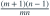
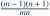
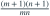
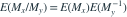

独立样本分别来自  与
与  ，样本量为 m、n，
，样本量为 m、n， 。样本最大值分别为
。样本最大值分别为  。使
。使  无偏估计
无偏估计  的 c 是？
的 c 是？
与 ，样本量为 m、n，。样本最大值分别为 。使 无偏估计 的 c 是？- A

- B

- C

- D1
我已思考，展开答案与解析
正确答案：A
- 独立性给出

。 - 两期望分别为 、，其乘积的倒系数即题求。
易错提醒无偏估计的比一般不是参数比的无偏估计，必须计算分母的负矩。
JYSG · 432精选 · 册内清华大学432·2024年·三(2)；PDF第116页（印刷页114）
原大题拆解